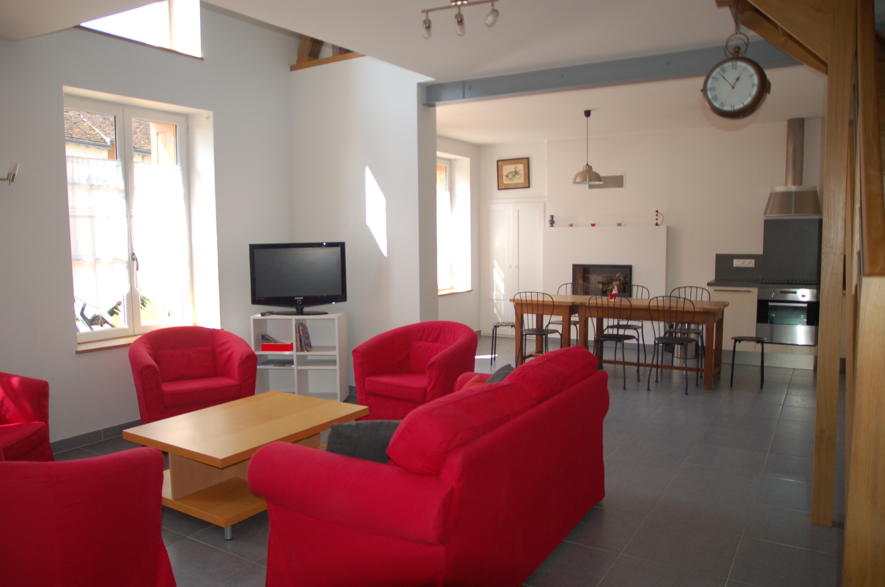
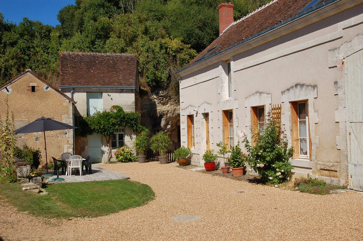
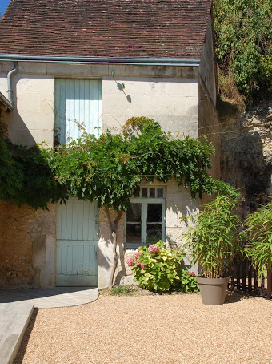
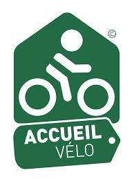

Bienvenue au gîte Le Coudray
Venez découvrir les étonnants trésors du
Val de Loire et de la Vallée du Loir.


Rénovée intérieurement dans un style moderne et confortable, la maison est équipée d'un chauffage au sol, d'un insert et de radiateurs électriques dans les chambres.
Le gîte peut accueillir 8 personnes.
Il est accessible aux personnes à mobilité réduite accompagnées.
La maison et ses petites dépendances entourent une cour-jardin (non close) avec terrasse.
Vous pourrez profiter du soleil sur la terrasse avec salon de jardin, parasols et barbecue.


La grange au bout de la maison est à votre disposition pour vous mettre à l'ombre, vous retrouver en famille ou entre amis autour de tables, ranger vos vélos, ou tout simplement étendre votre linge à l'abri.
Vous y trouverez également quelques jeux d'extérieur.
Notre gîte est labellisé Gîte de France 3 épis depuis son ouverture en 2013.
En 2014 nous avons été classés meublé de tourisme 4 étoiles par Val de Loire Tourisme et obtenu le label Accueil Vélo.



+ lecteur DVD

Location sur demande
Cuisine équipée et aménagée ouverte sur le salon,
1 chambre (1 lit 160 X 200) et salle d'eau avec wc aménagées pour personne à mobilité réduite.
Un puits de lumière venant de la mezzanine éclaire le grand salon ou dominent le rouge et le gris.
Grande mezzanine coin-détente,
1 chambre (4 lits 90 X 200), 1 chambre (1 lit 160 X 200), salle de bains, wc.


Chaine hifi, jeux de société, petite bibliothèque et jeux pour enfants sont à votre disposition.
Visitez les grands classiques comme Chambord, Chenonceau, Le Clos-Lucé, Cheverny ou Amboise.
Ils comptent parmi les plus célèbres monuments de France et sont ouverts au public toute l'année, jusqu'au cœur de l'hiver.
A quelques kilomètres des châteaux de la Loire, la Vallée du Loir serpente au pied de coteaux creusés de caves et de maisons troglodytes.
La Vallée du Loir vous propose de découvrir notamment Vendôme avec son abbaye millénaire, Montoire et son célèbre festival international folklorique, Couture sur Loir et la maison natale du poète Ronsard.
Laissez-vous surprendre par cette vallée à la cuisine du terroir appétissante et réputée pour son vignoble (3 AOC: Côteaux du Vendômois, Côteaux du Loir, Jasnières)
Le pittoresque village de Villiers sur Loir, situé sur les routes de St Jacques à vélo, mérite surtout d'etre visité pour ses nombreuses caves troglodytiques en tuffeau et ses superbes vignes qui tapissent le haut d'un côteau au hameau du Coudray.
A 2kms de la maison se trouve un plan d'eau (27 ha) avec sa base de loisirs: promenade, baignade, voile, pêche.
Vous pouvez nous joindre directement par téléphone
(English spoken, Deutsch gesprochen):
Nancy et Jean-Yves MENARD
Tél. : +33 2 54 72 94 03
Port. : +33 6 30 48 10 29
Ou sinon envoyez nous directement un mail ou un message via le formulaire ci-dessous
N'oubliez pas d'indiquer dans votre message votre numéro de téléphone ainsi que les dates de réservation souhaitées.

{kind=link}
{kind=link}
{kind=link}
{kind=link}